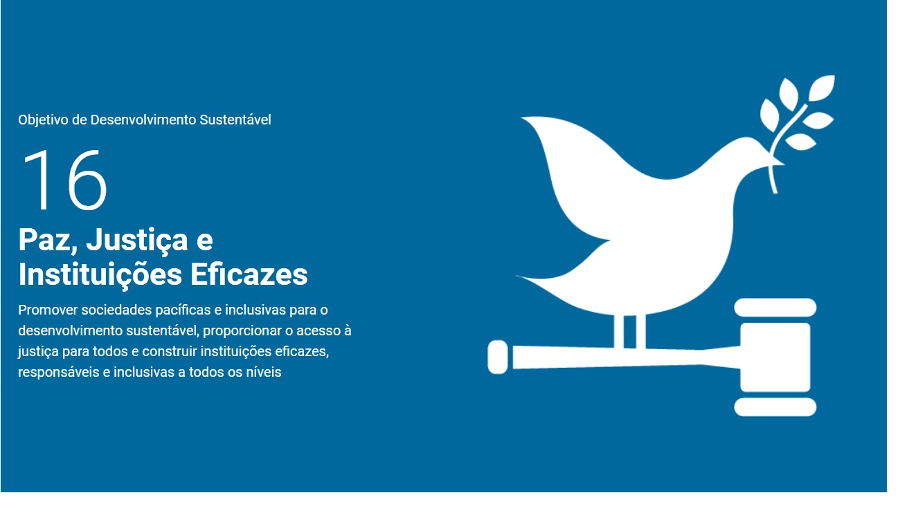

Yasmin Sayuri Matuzaki Cardoso
Resumo
Estudante de Engenharia de Computação na UTFPR, com foco em desenvolvimento fullstack, Python, bancos de dados e Arduino.
Experiência
Fisk - Escola de Idiomas
Fevereiro 2020 – Outubro 2020
Reuniões, provas orais e escritas, ensino de inglês básico e avançado para alunos de diferentes idades.
Formação
Universidade Tecnológica Federal do Paraná
Engenharia de Computação - Agosto de 2022 - Atual
Colégio Rui Barbosa, Anglo Xereta
Ensino Médio - Fevereiro de 2019 - Dezembro de 2021
ODS que pretendo contribuir
